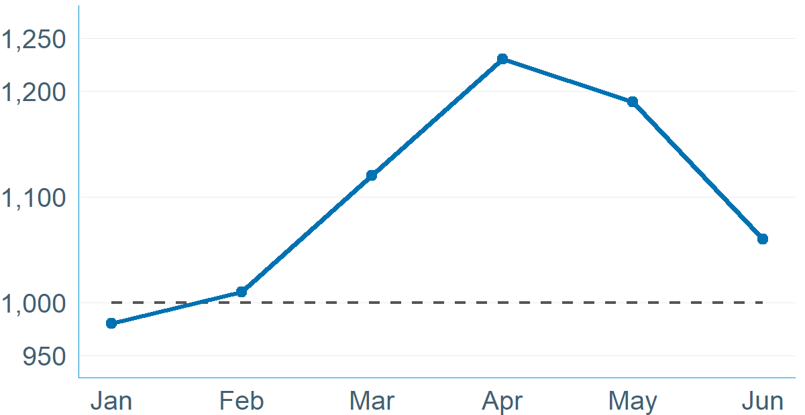

Compare observed and expected deaths.
How different was mortality during a heatwave, outbreak or other event? Use weekly or monthly death counts to estimate a baseline and see how far recorded deaths were above or below it.
The browser version downloads R on your first visit. Start with a built-in example or open your own workbook.


In April, 1,230 deaths were observed and 1,000 were expected. The difference was 23% of the expected count.
See how the P-score is calculatedFrom a workbook to a report
Prepare the data
Match weekly or monthly death counts to an event calendar. Check dates, missing counts and which periods will form the baseline.
Compare baselines
Explore seven all-cause models, from historical averages to seasonal regression. Read the uncertainty alongside the estimated excess.
Run your first analysis
Follow a built-in country example from the first import to a results table, a plot and a downloadable report.
Run exmort in RStudio
Install the CRAN release once. Then launch the calculator from the RStudio console whenever you need it.
install.packages("exmort")
library(exmort)
run_app()GitHub development version
Explore mortality by cause
Select a country and cause from the Australian or Philippine monthly workbooks. Compare historical-average and negative-binomial baselines. The Philippine example compares 2024 with 2019–2023, a period that includes pandemic years.